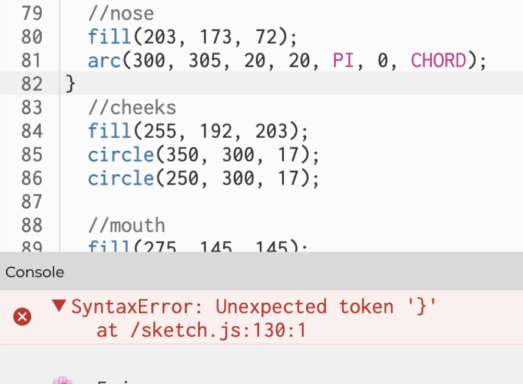

February 5, 2024
My partner, Cindy Chen, attended the Dumpling Festival event where she made Spring Festival couplets. To recreate this, I made the canvas in the shape of a 春联, and by pressing various letters on the keyboard and dragging the mouse, the audience can create their own Spring Festival couplet digitally. The user can also press the “b” or “B” key while dragging the mouse to have a black-colored drawing tool. The user can also press “p” or “P” to add polka dots onto the red couplet canvas. My partner had so much fun at the event that she was still making Spring Festival couplets in her dream that night, creating a sense of deja vu. The sense of deja vu is created by pressing the “d” or “D” key where the random flashing colors around my partner's self-portrait create a science fiction, traveling through time kind of feeling. Around the canvas, I inserted four triangles where I utilized environment variable alignments to put their symmetry. By doing so, I could create the diamond-like shape of the couplet paper that my partner drew on. To get a blank canvas, the user can press the spacebar.
Throughout coding, I had to figure out the layering. In the beginning, everything on the canvas was blinking. However, as I learned from CC LA Ricci, that the condition affects everything below, I changed the order of my code (below left). In addition, I learned to assign stroke weights to refrain things from blinking. Another issue throughout the code was that I included one too many {} which would result in an error shown below on the right side. Ricci also showed me the p5 references to teach me how to incorporate the spacebar for a blank canvas.
My partner enjoyed recreating her couplet onto the digital canvas. She also liked how I added the colorful confetti and blinking lights to create that festive yet deja vu feeling she had. Through the process of learning setup and drawing functions, I learned other ways how to make my digital art more interactive. For example, I learned how to let my audience participate in drawing calligraphy on my digital canvas using the draw function. My favorite was incorporating the random in the “if” statements as it made the canvas more unique as the audience can never predict the next stroke size or color. Variables and conditionals also allowed me to have more control over the independently moving objects. For example, for the confetti circles, I controlled the size it would grow to by incorporating the x less than 20, which allowed me to control the circle to only grow to 20 in size.
As my partner described her experience, I could feel her excitement mixed with confusion in her experience. To create the festival description my partner gave, I created the confetti circles to make it seem like it was popping toward the audience. I also gave them different fill colors to match the colorful confetti. She also had to get creative with different colors and skills as she drew on the paper for the couplet, so I utilized the draw function to let my audience get creative with the canvas personally. To create that sense of deja vu in a fun way, I decided to incorporate a type of flashing blinking light that the audience can utilize by pressing the “d” or “D” key. In science fiction movies, I often see colorful colors to represent travel through time which inspired me to use this kind of colorful blinking lights in my digital art. Plus, by doing so, I made the overall canvas more fun which was the word my partner used to describe her overall experience.
After using mouse and keyboard interaction, describe an interactive device — one that doesn't exist yet — that could let you recreate better the memory/dream in p5.js. Overall to me, digital interactions make real-world interactions more convenient. Digitally, there are endless possibilities you can do on your canvas, whereas in real life if you wanted to draw something, it would require you to learn the skills properly for you to get the result you want. In this way, digital interactions provide people who would struggle with something in the real world with another way to make something they want come true. One interactive device would be to create this self-drawing pen. A user could tell the pen what it would like to be drawn, and after receiving the information, the pen could be programmed to draw on its own. This could allow many creative thinkers to conveniently create a visual representation of their thoughts.